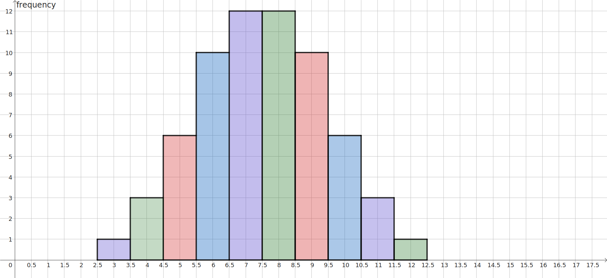

This class may be different from many of the mathematics classes you have taken in the past. You will be encouraged to explore geometrical ideas, solve puzzles, make conjectures, discuss with classmates, make connections between ideas, explain your solutions, and justify your reasoning. You should not expect to be shown how to do problems by the instructions. In fact, there may not be one, single right way to complete some of the problems but rather many acceptable ways of coming to a solution. Your teacher will encourage you to share these alternative approaches with the class.
Perhaps this course would be easier for you if you were simply told how to solve the problems, but the objective of this course is not to learn facts and methods, but rather to develop your mathematical thinking and communication skills. In this technological age, computers can do many of the algorithms and processes that used to be the core of mathematics education, but they have not replaced man’s role of developing strategies to solve problems and recognizing when mathematics can be applied to real world situations. Developing these reasoning skills will help you more in your future than simply being able to quote the Pythagorean Theorem. On the other hand, it is still useful to know the Pythagorean Theorem so that you are able to recognize when it can (and cannot) be used to solve both elementary and complex problems. This theorem along with some other basic formulas you have learned in the past (and can look up online) form a toolbox for our work, but we will give more emphasis to the creative process that is mathematics.
In “A Mathematician’s Lament” Paul Lockhart describes a nightmare in which music was taught in the same way that mathematics is currently taught. He says,
Mathematics is the music of reason. To do mathematics is to engage in an act of discovery and conjecture, intuition and inspiration; to be in a state of confusion— not because it makes no sense to you, but because you gave it sense and you still don’t understand what your creation is up to; to have a breakthrough idea; to be frustrated as an artist; to be awed and overwhelmed by an almost painful beauty; to be alive.
If we were to teach music via lecture and mere recall, focusing on the notation and structure, but not allowing students to experience and create music, the subject would be dry and uninteresting, the creative process would be stifled, and very few would have an interest in learning music. Yet, that is what we have done with much of our mathematics instruction. We have removed both the exploration and the fun. [1.5.1]
So I encourage you to embrace the experience that is mathematics. Approach each puzzle with an open mind, make guesses as to what is happening, and experiment to determine whether your ideas are correct. Play with the materials and the concepts and ask new questions. In this course, you might even be invited to explore a question you posed instead of the one the teacher originally posed! Mathematics is not just about finding the answer; even when there is an answer, our work should evoke new questions: Why? What else?
Subsection1.1.2First Exploration
Exploration1.1.1.Tiling Rectangles with Polyominoes.
Although this task is to fill a box, you are encouraged to think outside the box as you do this activity. You will find that a willingness to take chances and try out different strategies will be essential to your success in this course. Taking time to reflect as you respond to the "why" questions and sharing your ideas with your classmates will also contribute greatly to your learning. Have fun!
(a)
Fill the blue square with non-overlapping copies of the green L-shaped tetronimo. How many tetrominoes are required?
To use the interactive tool, click and drag the L-shape to create a new copy of the shape. Use the large dot, to rotate the copy. Arrange copies to cover the blue square. This may also be done on paper.
Just as a domino consists of two squares joined at an edge, a tetromino is a flat figure created by joining four congruent squares along edges. Pictured below are the four other tetrominoes, an I-shape, a Z-shape, a T-shape, and a small square. Like the L-shape, some of these can cover the larger square without overlaps or gaps. Identify which tetrominoes will tile one of the larger squares and show how this can be done. If there are any tetrominoes which cannot tile the square alone, explain why you believe the tiling is impossible.
Once again in the application, copies of the I-shape, Z-shape, T-shape, and small square can be created by clicking the shape and dragging. Four larger squares are provided; try to tile one with the I-shape, one with the Z-shape, etc.
Since a tetromino is formed by joining four unit squares, each tetromino has an area of four square units, as illustrated here.
What is the area of the square that you filled with tetrominoes?
(d)
Similarly, we define a pentomino to be a figure formed by joining five congruent squares along edges. One pentomino is pictured. Create new pentominoes by copying and moving the provided purple unit square. Note that if two pentominoes are reflections or rotations of each other we consider them to be the same pentomino. Be sure to save a copy of your sketch for future reference.
There is no right or wrong answer here! Write something!
Exploration1.1.2.More Explorations with Pentominoes.
(a)
To simplify our discussion, we can call each pentomino by the letter it most resembles, namely F, I, L, P, T, U, V, W, X, y, Z, and N. The F and N pentominos are less obvious and are identified below. Sketch and identify the others or refer to and label your earlier sketches.
(b)
Observe how a larger copy of the L-pentomino tile can be created by filling it with four different pentominoes:
How are the height and width of the new larger L-tile related to the height and width of the basic L-tile?
How is the area of the new larger L-tile related to the area of the basic L-tile?
Choose another pentomino from among F, I, P, T, U, W, y, and Z, and demonstrate how it can be created using four distinct polyominoes. Note that this cannot be done with X or V.
Use the interactive Polypad activity below or access a fullscreen version at Polypad by Mathigon using the link Pentomino Set 5 .
(c)
On the other hand, it is possible to create a copy of the V tile that is three times the height and width of the basic V tile by filling it with nine distinct pentominoes.
Show how this can be done.
How does the new area compare with the original?
Explore whether other pentominoes can be “tripled” in this way.
(d)
What happens to the area of a figure when its height and width of are doubled? tripled? How does the number of basic pentominoes needed to fill the figure change?
Subsection1.1.3Learning from the Explorations
The purpose of Exploration 1.1.1 is two-fold. It introduces the exploratory nature of the course and it also suggests a few important geometric facts and definitions that we will use as our initial geometrical foundation. These facts are chosen because they are intuitively obvious, but they give us some building blocks we will need to justify more complex ideas. We state them here for clarity and future reference beginning with a definition for area.
Definition1.1.1.
The area of a closed figure in the plane is the number of unit squares needed to fill the figure without any gaps or overlaps.
We noted that each tetromino was made up of four unit squares and each pentomino consisted of five unit squares; thus the area of a tetromino is four square units and the area of a pentomino is five square units. We also recalled the area formula for a rectangle.
Principle1.1.2.Area of a Rectangle.
The area of a rectangle is the product of its length and width; in symbols, \(A=\ell \times w\text{.}\)
Another observation is that if you can fill a closed region with smaller shapes so that none of the smaller shapes overlap and no part of the region is left uncovered, then the area of the region is equal to the sum of the areas of the smaller shapes. While this may seem like a simple idea, we will see that it allows us to determine the area formulas of other geometric shapes and to prove the Pythagorean Theorem. We can dissect shape into smaller shapes, rearrange them into another shape, and argue that the two regions have the same area because they both consist of the same colllection of smaller shapes.
Principle1.1.3.Additivity of Area.
If a region can be cut into non-overlapping sections, the area of the whole region is equal to the sum of the areas of the sections.
We applied these two principles in Task 1.1.1.e where we attempted to construct rectangles using pentominoes. Since pentominoes have an area of five square units, we could only construct rectangles with areas divisible by 5, namely 5, 15, 20, 25, 30, 35, 40, 45, 50, 55, and 60. 6 In the same way, any shape made up entirely of tetrominoes must have an area divisible by 4.
Finally, we observed that when the lengths of all sides of a two-dimensional figure are doubled (or tripled), the area of the figure is muliplied by 4 (or 9). This is easy to observe in a rectangle with length \(\ell\) and width \(w\text{.}\) When we create a new rectangle with length \(L=2\ell\) and width \(W=2w\text{,}\) the resulting area is \(LW=(2\ell)(2w)=(2\cdot 2)(\ell w)=4\ell w\) square units.
Subsection1.1.4Exploring to Learn
Hopefully as you worked through these tasks, you allowed yourself to experiment with different arrangements of squares and polyominoes. This openness to creative exploration is essential to mathematical thinking. Phrases like "what if" or "I wonder" arise often as mathematicians create and make sense of new ideas. If you find yourself wanting to explore a question arising from a task but not explicitly asked, jot down your question and share it with your instructor. Your instructor might encourage you to investigate your question or even invite your classmates to consider it. 7
You may have noticed that you and your peers discovered different ways of completing the same task. Multiple approaches and multiple solutions are often welcome and even encouraged! If you have a strategy that is different than your group members, try both separately and then compare. You have the ability to do the mathematics, but it will be more meaningful if you attack tasks in a way that makes sense to you. This will require you and your peers to take some risks, to challenge you to speak up, and to be nonjudgmental of others.
In fact, doing mathematics is a social activity. When we notice patterns and make conjectures, we share our ideas with others and use logic to make convincing arguments. For over 2500 years, mathematicians have been adding to the body of mathematical knowledge; some of which has been shared with you during your studies. The field of mathematics continues to grow.
Unfortunately, most students have had little opportunity to creatively explore in their mathematics classes. You have probably memorized formulas and performed calculations in many of your mathematics classes. While formulas and calculations are useful tools in mathematics, they are not the essence of mathematics and can often be done via a computer. In this course, we will develop the creative thinking, reasoning, and problem-solving practices that set humans apart computers and are valued by employers. We will think outside the box, make predictions, and wonder why. Different approaches and strategies are encouraged. Relax and have fun exploring mathematics!
Exercises1.1.5Exercises
Skills and Recall
Exercises in this section are designed to check that you have understood the main ideas and that you can perform the skills, techniques, and formulas needed to move on in the course. Exercises in this group may also encourage practice of skills that appear in education licensure exams.
1.
Determine the area of the following figures: ADD FIGURES HERE!!! DISSECT INTO RECTANGLES, PENTOMINOES.
2.
How many distinct triominoes exist? Sketch them. Do not include any triominoes that are reflections or rotations of ones you have already sketched.
A hexomino is constructed from six \(1 \times 1\) squares. Explain why it is impossible to construct a solid rectangle with area twenty using non-overlapping hexomino tiles.
4.
Jay constructs a solid rectangle using heptomino (seven-square) tiles. What must be true about the area of Jay’s rectangle?
5.
Show that it is possible to construct a rectangle of area 10 using pentominoes if you are allowed to reuse the same tile.
Show that if you are allowed to use copies of the same pentomino (4-square) tile multiple times you can construct a rectangle of area \(5n\) for every whole number \(n\text{.}\) (Hint: Use the same tetromino \(n\) times.)
6.
Sketch all the different rectangles with no gaps or overlaps that can be created by a single set of five tetrominoes? You don’t have to use all of the tetrominoes in each rectangles and you may use a new set of tetrominoes for each rectangle; however no rectangle will use a single tile more than once.
7.The Area Model for Multiplication.
This problem illustrates the Area Model for Multiplication, an effective way of helping elementary school students visualize the operation of multiplication.
On graph paper sketch a \(3 \times 5\) rectangle. Show the fifteen squares that make up the area.
Note that 12 can be factored as \(1 \times 12\text{,}\)\(2 \times 6\text{,}\) or \(3 \times 4\text{.}\) Sketch area models for each of these products.
Extending the Concepts
8.Area Model for Two-digit Numbers.
Multiplication of two-digit numbers can be represented using the area model: for example, to multiply 47 by 25 we can represent 47 as 4 tens and 7 ones and 25 as 2 tens and 5 ones. We then can sketch the product as shown.
Determine the area of each of the four subrectangles pictured. Here, the squares on the grid are not \(1\times 1\) but defined by the notations on the sides.
Add the four areas of the subrectangles together to find the total area.
The standard algorithm to multiply \(47 \times 25\) is shown. Identify what the 235 and 940 in the algorithm represent in the area model pictured at the beginning of this exercise.
47
\(\times\) 25
235
+ 940
1175
Table1.1.4.
9.Multiplication of Multidigit Numbers.
Sketch an area model illustration of the product \(2132\times 51\text{,}\) not necessarily drawn to scale, but with each side length broken down into thousands, hundreds, tens, and ones as appropriate. Demonstrate how this area model can be used to compute the product.
10.Modeling the Multiplication of Fractions and Mixed Numbers.
Draw a square and assume each side has length of 1. Divide the height equally into thirds and the width equally into fourths. How many subrectangles does this split the square into? What is the area of each subrectangle? What does this tell you about \(\frac{1}{3} \times \frac{1}{4}\text{?}\)
The sketch shows a model of \(2\frac{2}{3} \times 1 \frac{2}{5}\text{.}\) Compute the areas of each of the four shaded regions (blue, orange, pink, and green), and then compute the total. Note that solid lines are used to represent lengths of whole units and dashed lines represent fractional lengths
Draw an area model of \(\frac{2}{5} \times \frac{3}{4}\) by dividing the unit length into fifths and the unit width into fourths. Shade and compute the product. Explain how you find the numerator and denominator of the unsimplified fraction from the sketch.
11.Modeling the Multiplication of Polynomials.
The sketch below illustrates a product of polynomials.
Write the height of the entire rectangle as an algebraic expression involving the variable \(x\text{.}\)
Write the width of the entire rectangle as an algebraic expression involving the variable \(x\text{.}\)
Algebraically compute the area of the entire rectangle as the product of your two algebraic expressions. Show your work.
Find the area geometrically by finding the areas of the four subrectangles and adding the areas together. Show your work. Did you get the same result?
12.Area in Probability.
A tetrahedral die is a triangular pyramid with four sides numbered 1 through 4. Because the die is shaped like a triangular pyramid, there is no top face so the number rolled will correspond to the top point if the dice are labeled like the ones to the right. If three tetrahedral die are rolled the possible sums range from 3 to 12. For example, consider the sum 5 which can be achieved by each of the following six rolls: (1,1,3), (1,2,2), (1,3,1), (2,1,2), (2,2,1), (3,1,1).
Determine all of the ways that a sum of 9 can occur.
List all of the ways that a sum of 6 can be rolled.
The sketch below is a bar graph or histogram showing the frequency or number of ways that each of the sums from 3 to 12 can be rolled with three tetrahedral dice. Note that the sums are given on the horizontal axis and the frequencies are on the vertical axis.
What is the total number of possible rolls?
What is the number of rolls resulting in 7?
The probability of an event is computed by dividing the number of different rolls meeting the criteria for that event by the total number of different possible rolls. What is the probability of rolling a 7 with three tetrahedral dice?

Writing Prompt
13.Mathematical Autobiography.
Write an essay (2 to 4 pages) in which you discuss the experiences in your life that have formed you as a mathematician or geometer. This essay will be unique to you, but here are some questions that you might consider in your reflection: Were there any turning points in your education? What experiences have stimulated and which have stimied your mathematical growth? Are there obstacles that you have overcome or would like to overcome? How? What are you personal goals in this course? What do you see as personal challenges to being successful?
The paper should not be a mere timeline (boring!) or a list of answers to the questions above (disjointed), but instead should be a cohesive essay that focuses on the development of your mathematical ability, confidence, and attitude, centering on a few key turning points. Examples of experiences that help illustrate your statements should be included. How did the class format (lecture, testing, activities, interaction, pacing) change you? Did you have experiences beyond the classroom that affected your mathematical growth?
You may be asked to look back on this essay at the end of the semester to assess personal growth. Your instructor may also use this autobiography to better understand you as a student. In case your instructor knows your past teachers, use psuedonyms or letters to refer to them. The essay should focus on you, not your teachers.
mathigon.org/polypad/embed/OqM1coKhvKsMuw
mathigon.org/polypad/deIUjqp9tTSpaQ
mathigon.org/polypad/lejfSv8Xt8FxJA
mathigon.org/polypad/TDXu2UNNZgwh2Q
mathigon.org/polypad/TDXu2UNNZgwh2Q
To construct a rectangle of area 10, the same pentomino must be used twice.
Some questions may be addressed in a later section, too tangential, beyond the scope of this course, or even unsolved by the mathematical community. Thus your instructor will make the decision on which questions to pursue and when.